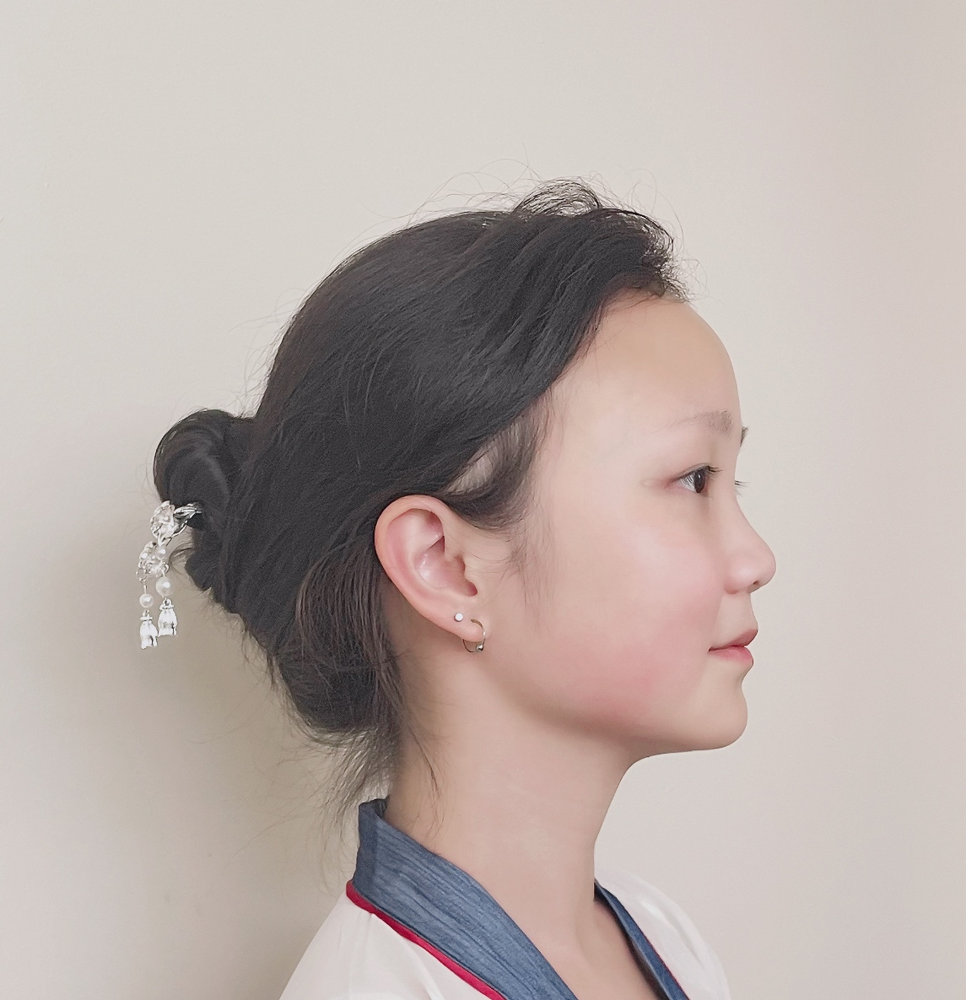

Computer scientist, researcher, and builder. I work at the intersection of computer vision, multimodal AI, and thoughtful software — with a soft spot for projects that make technology feel more human.
01 — Background
I'm a Computer Science & Engineering Honors student at The Ohio State University (GPA 3.91, Dean's List), incoming M.S. student in Electrical Engineering at Stanford. My work sits at the crossroads of computer vision, multimodal AI, and practical software development.
As a research assistant advised by Prof. Wei-Lun Chao at OSU, I've contributed to published benchmarks at NeurIPS and CVPR, and led first-author work on evaluating model robustness under real-world distribution shift. I love building things that connect rigorous research to real-world usability.
Outside the lab, I'm equally at home leading a startup website overhaul, designing an AI-powered wardrobe app, or hunting down the perfect top-rope climbing route.
02 — Toolkit
From low-level systems to full-stack apps to ML pipelines — here's what I reach for.
03 — Work
Apps and websites I've built — from AI-powered wardrobes to startup platforms. Occasionally, interesting ideas pop into my mind.
Led web development and startup strategy for a friendly storage brand. Delivered a fully functional NextJS platform that achieved 5× annual revenue growth by optimizing the digital booking experience and expanding market reach.
View Link →iOS app for smart outfit curation with 3D wardrobe visualizations. Integrates OpenWeather API for real-time conditions, SceneKit for immersive 3D displays, and AI-driven suggestions based on weather, preferences, and lucky colors.
View Demo →04 — Publications
Published in top-tier venues — NeurIPS, CVPR, ECCV, CVPR Workshop, and arXiv.
05 — Experience
06 — Life
Collecting experiences, not just commits.
Bouldering and top-rope sessions — problem-solving on the wall has a lot in common with debugging.
Chasing elegance on ice — a pursuit of grace, balance, and (occasionally) dignity.
Collecting moments, not things — Singapore, Columbus, Vancouver, Berlin, and wherever's next.
07 — Say Hello
I'm always happy to chat about research, collaboration, or just cool projects. Reach out and I'll get back to you!